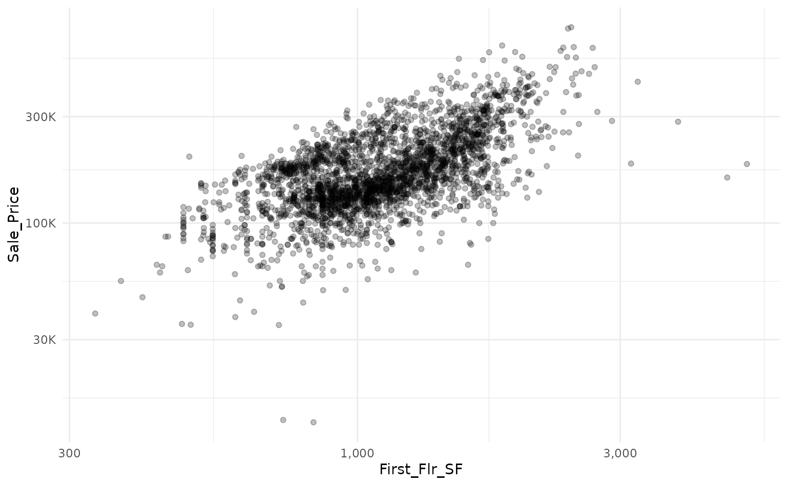
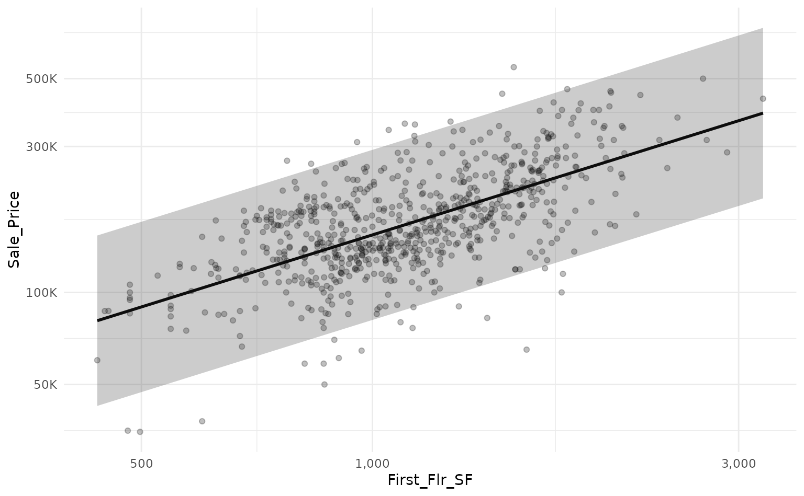
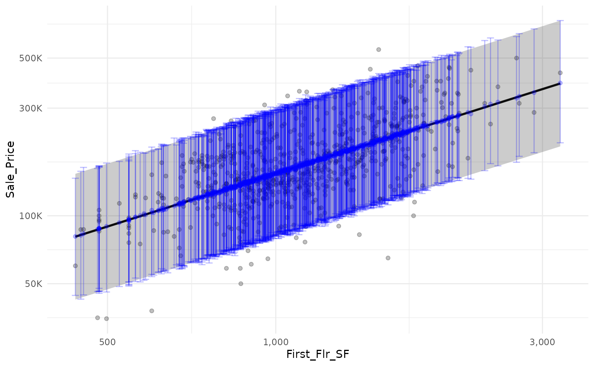
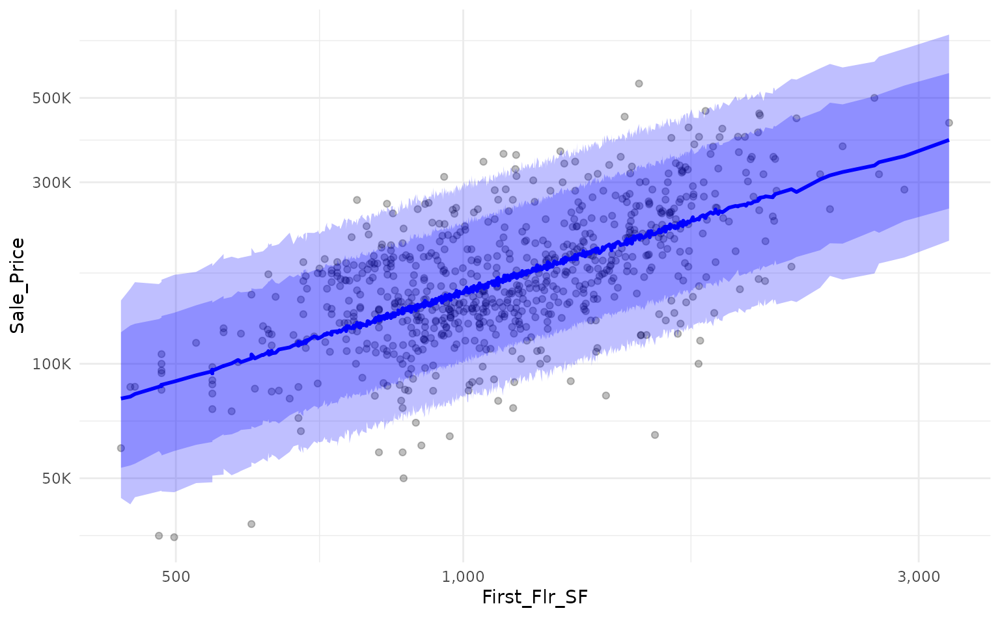
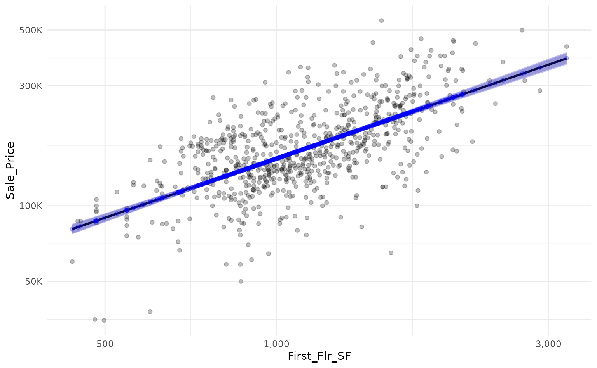

Estimating Linear Intervals
Source:vignettes/Estimating-Linear-Intervals.Rmd
Estimating-Linear-Intervals.RmdWhen using a linear model, we can generate prediction and confidence intervals without much effort. By way of example, we can use workboots to approximate linear model intervals. Let’s start by building a baseline model. In this example, we’ll predict a home’s sale price based on the first floor’s square footage with data from the Ames housing dataset.
library(tidymodels)
# setup our data
data("ames")
ames_mod <- ames %>% select(First_Flr_SF, Sale_Price)
# baseline plot
ames_mod %>%
ggplot(aes(x = First_Flr_SF, y = Sale_Price)) +
geom_point(alpha = 0.25) +
scale_x_log10(labels = scales::comma_format()) +
scale_y_log10(labels = scales::label_number(scale_cut = scales::cut_short_scale()))
We can use a linear model to predict the log transform of
Sale_Price based on the log transform of
First_Flr_SFand plot our predictions against a holdout set
with a prediction interval.
# log transform
ames_mod <-
ames_mod %>%
mutate(across(everything(), log10))
# split into train/test data
set.seed(918)
ames_split <- initial_split(ames_mod)
ames_train <- training(ames_split)
ames_test <- testing(ames_split)
# train a linear model
set.seed(314)
ames_lm <- lm(Sale_Price ~ First_Flr_SF, data = ames_train)
# predict on new data with a prediction interval
ames_lm_pred_int <-
ames_lm %>%
predict(ames_test, interval = "predict") %>%
as_tibble()
ames_lm_pred_int %>%
# rescale predictions to match the original dataset's scale
bind_cols(ames_test) %>%
mutate(across(everything(), ~10^.x)) %>%
# plot!
ggplot(aes(x = First_Flr_SF)) +
geom_point(aes(y = Sale_Price),
alpha = 0.25) +
geom_line(aes(y = fit),
size = 1) +
geom_ribbon(aes(ymin = lwr,
ymax = upr),
alpha = 0.25) +
scale_x_log10(labels = scales::comma_format()) +
scale_y_log10(labels = scales::label_number(scale_cut = scales::cut_short_scale()))
We can use workboots to approximate the linear model’s prediction
interval by passing a workflow built on a linear model to
predict_boots().
library(workboots)
# setup a workflow with a linear model
ames_wf <-
workflow() %>%
add_recipe(recipe(Sale_Price ~ First_Flr_SF, data = ames_train)) %>%
add_model(linear_reg())
# generate bootstrap predictions on ames test
set.seed(713)
ames_boot_pred_int <-
ames_wf %>%
predict_boots(
n = 2000,
training_data = ames_train,
new_data = ames_test
)By overlaying the intervals on top of one another, we can see that
the prediction interval generated by predict_boots() (in
blue) is a good approximation of the theoretical interval from
lm().
ames_boot_pred_int %>%
summarise_predictions() %>%
# rescale predictions to match original dataset's scale
bind_cols(ames_lm_pred_int) %>%
bind_cols(ames_test) %>%
mutate(across(.pred:Sale_Price, ~10^.x)) %>%
# plot!
ggplot(aes(x = First_Flr_SF)) +
geom_point(aes(y = Sale_Price),
alpha = 0.25) +
scale_x_log10(labels = scales::comma_format()) +
scale_y_log10(labels = scales::label_number(scale_cut = scales::cut_short_scale())) +
# add prediction interval created by lm()
geom_line(aes(y = fit),
size = 1) +
geom_ribbon(aes(ymin = lwr,
ymax = upr),
alpha = 0.25) +
# add prediction interval created by workboots
geom_point(aes(y = .pred),
color = "blue",
alpha = 0.25) +
geom_errorbar(aes(ymin = .pred_lower,
ymax = .pred_upper),
color = "blue",
alpha = 0.25,
width = 0.0125)
Both lm() and summarise_predictions() use a
95% prediction interval by default but we can generate other intervals
by passing different values to the parameter
interval_width:
ames_boot_pred_int %>%
# generate a 95% prediction interval
summarise_predictions(interval_width = 0.95) %>%
rename(.pred_lower_95 = .pred_lower,
.pred_upper_95 = .pred_upper) %>%
select(-.pred) %>%
# generate 80% prediction interval
summarise_predictions(interval_width = 0.80) %>%
rename(.pred_lower_80 = .pred_lower,
.pred_upper_80 = .pred_upper) %>%
# rescale predictions to match original dataset's scale
bind_cols(ames_test) %>%
mutate(across(.pred_lower_95:Sale_Price, ~10^.x)) %>%
# plot!
ggplot(aes(x = First_Flr_SF)) +
geom_point(aes(y = Sale_Price),
alpha = 0.25) +
geom_line(aes(y = .pred),
size = 1,
color = "blue") +
geom_ribbon(aes(ymin = .pred_lower_95,
ymax = .pred_upper_95),
alpha = 0.25,
fill = "blue") +
geom_ribbon(aes(ymin = .pred_lower_80,
ymax = .pred_upper_80),
alpha = 0.25,
fill = "blue") +
scale_x_log10(labels = scales::comma_format()) +
scale_y_log10(labels = scales::label_number(scale_cut = scales::cut_short_scale()))
Alternatively, we can estimate the confidence interval around each
prediction by passing the argument "confidence" to the
interval parameter of predict_boots().
# generate linear model confidence interval for reference
ames_lm_conf_int <-
ames_lm %>%
predict(ames_test, interval = "confidence") %>%
as_tibble()
# generate bootstrap predictions on test set
set.seed(867)
ames_boot_conf_int <-
ames_wf %>%
predict_boots(
n = 2000,
training_data = ames_train,
new_data = ames_test,
interval = "confidence"
)Again, by overlaying the intervals on the same plot, we can see that
the confidence interval generated by predict_boots() is a
good approximation of the theoretical interval.
ames_boot_conf_int %>%
summarise_predictions() %>%
# rescale predictions to match original dataset's scale
bind_cols(ames_lm_conf_int) %>%
bind_cols(ames_test) %>%
mutate(across(.pred:Sale_Price, ~10^.x)) %>%
# plot!
ggplot(aes(x = First_Flr_SF)) +
geom_point(aes(y = Sale_Price),
alpha = 0.25) +
scale_x_log10(labels = scales::comma_format()) +
scale_y_log10(labels = scales::label_number(scale_cut = scales::cut_short_scale())) +
# add prediction interval created by lm()
geom_line(aes(y = fit),
size = 1) +
geom_ribbon(aes(ymin = lwr,
ymax = upr),
alpha = 0.25) +
# add prediction interval created by workboots
geom_point(aes(y = .pred),
color = "blue",
alpha = 0.25) +
geom_ribbon(aes(ymin = .pred_lower,
ymax = .pred_upper),
fill = "blue",
alpha = 0.25)